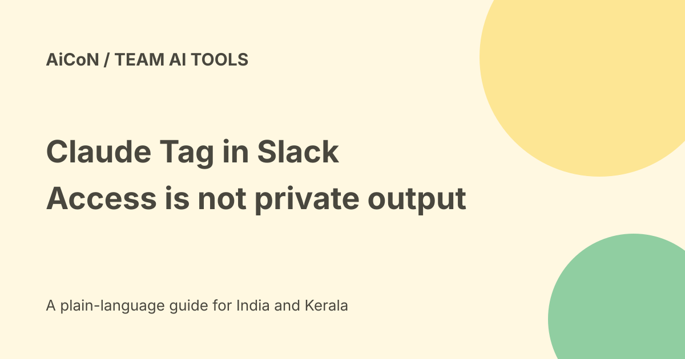

Claude Tag in Slack: personal connectors and review limits
Claude Tag is Anthropic's beta experience for Claude in Slack. Personal connectors let your own channel requests use services linked to your Claude account. Other people do not gain your login, but they can see information in a result posted to the channel.

Two kinds of access
A personal connector uses your own account permissions. A Claude Tag connector attached by an admin uses the service account set up for the channel.
The current documentation says people asking in the channel receive the same admin-attached access. That access can differ from what their own account can open. Do not confuse channel access with a person's direct access to a file.
Who can use your personal connectors?
The docs say your connectors serve requests you make. Someone else's request does not use them. Work through those connectors is recorded under your name and uses your permissions.
This is a product access rule, not proof that the result stays private. A summary posted to a Slack channel can disclose content to members who cannot open the original file. Check the audience before sharing.
Choose review deliberately
The first connector-use prompt described by Anthropic offers Allow, Allow with review and Don't allow. Allow starts auto mode: results post directly unless the sensitive-content check flags them. Allow with review holds each result for your approval before posting.
An automated check is not a guarantee that every confidential detail will be caught. For customer data, private plans or personal documents, review the outgoing result and audience rather than relying on a filter alone.
What is current about plans?
The help page says Claude Tag is in beta on Team and Enterprise plans. The older announcement said personal connectors were rolling out on Team, with Enterprise to follow.
The current personal-connectors documentation describes Team-wide availability and Enterprise admin controls. Those are more current than simply repeating the old rollout sentence. We did not inspect a particular organisation's account, so its actual access remains untested.
Enterprise settings and limits
The docs describe an Enterprise switch to require human review of every message. With it on, members no longer get auto mode for those results. On Team, the member's own review choice determines which results are held.
The current Enterprise guidance also says Claude Opus 5 must remain enabled under model access for tasks that need personal connectors. Check the current admin page and documentation, as settings can change.
Personal access is not unattended access
The official announcement says personal connectors do not run unattended. Scheduled routines and work Claude starts on its own use admin-attached channel connectors instead.
Keep those scopes separate. Connecting a personal calendar is not a blanket grant for every scheduled channel task. Read the actual prompt before allowing a particular task.
Start with a low-risk check
- Ask your organisation's owner whether Claude Tag is enabled and which channels it can use.
- Read the connector's permissions and choose a non-sensitive test task.
- Confirm that you are in the intended Slack channel.
- When prompted, choose review if you need to inspect every result.
- Read the exact output before allowing it into the channel.
- Check any real changes in the connected service.
- Remove unnecessary connectors and follow your organisation's policy.
No Slack app, connector or organisation setting was changed for this guide. We did not test whether a real request was held or posted.
Free, cost and India checks
This is not a free-consumer feature claim. The official help says channel mentions are billed to the organisation, while direct messages are billed to the person's own Claude account.
We did not verify a final INR plan total, taxes, Indian Slack workspace access or Malayalam quality. Plan membership is not proof that every connected service or task is free.
What changed since the original post?
We distinguish private account access from public channel output, explain review choices, add current Enterprise documentation and keep personal versus unattended access separate. No account-level rollout was verified.
Frequently asked questions
Can a teammate use my connectors?
The documented design says no. Posted results can still be visible to that teammate.
Does auto mode mean guaranteed confidentiality?
No. It uses a sensitive-content check, not a promise to catch everything.
Are personal connectors used in every routine?
No. The official announcement separates them from unattended channel work.
Is it free?
Team or Enterprise access and usage billing apply. A free offer was not verified.
Sources: Current personal-connectors documentation · Official announcement · Official Claude Tag help · Official setup overview. Checked 7 October 2026.